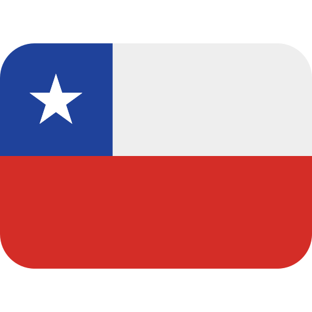
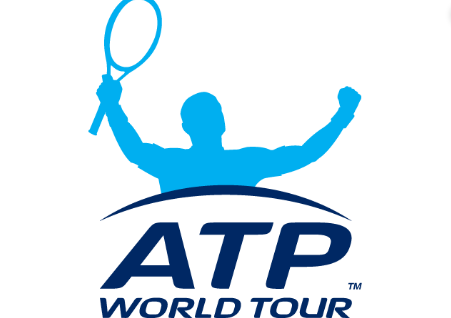

El Campeonato Mundial de Natación es la máxima competición internacional de los deportes acuáticos. Es realizado desde 1973 por la Federación Internacional de Natación (FINA). Desde su novena edición, en 2001, se lleva a cabo cada año impar. El punto central de los campeonatos son las competiciones de natación, disputadas en una piscina de 50 m. Además se realizan competiciones de natación en aguas abiertas, natación sincronizada, saltos, saltos de gran altura y waterpolo.
 Chile: Campeonato Nacional de Verano de Natación en Chile
El Campeonato Nacional de Verano es una competición deportiva de natación, de carácter nacional y organizada por la Federación Chilena de Deportes Acuáticos (FECHIDA), en colaboración con los clubes o Asociaciones, desde el año 1928.
Este campeonato es el más antiguo de los Campeonatos de Chile de natación organizados por la Federación Chilena de Deportes Acuáticos, disputándose en la temporada de verano, en piscina de 50 metros. Se ha organizado de forma ininterrumpida desde sus inicios.
2. Fútbol
Mundial: Copa Mundial de Fútbol
Es el principal torneo internacional oficial de fútbol masculino a nivel de selecciones nacionales en el mundo. Este evento deportivo se realiza cada cuatro años desde 1930, con la excepción de 1942 y 1946, debido a las consecuencias que dejó la Segunda Guerra Mundial Cuenta con dos etapas principales: un proceso clasificatorio en el que participan en la actualidad cerca de 200 selecciones nacionales y una fase final realizada cada cuatro años en una sede definida con anticipación en la que participan 32 equipos.
Chile: Campeonato AFP PlanVital
Fue fundada el 31 de mayo de 1933 por clubes disidentes de la Asociación de Football de Santiago, que organizaba el fútbol de forma aficionada en la ciudad de Santiago desde 1903, siendo el tercer torneo profesional más antiguo de América Latina. Desde su fundación se han disputado un total de 103 títulos en 88 temporadas oficiales de campeonato.
A lo largo de su historia, el campeonato de la Primera División de Chile ha tenido diferentes formatos, estructuras y cantidad de participantes. La actual temporada 2020, vuelve a disputarse en un solo torneo largo del año calendario 2020. Participan en la actual competencia, un total de 18 equipos y la cual funciona con un sistema de ascensos y descensos con la categoría inmediatamente inferior, la Primera B de Chile (categoría con la cual comparte en la disputa de la Copa Chile).
3. Baloncesto
Mundial: Copa Mundial de Baloncesto de la FIBA
Es una competición internacional de baloncesto disputada por las selecciones nacionales que forman parte de la Federación Internacional de Baloncesto (FIBA). El campeonato se celebra cada cuatro años desde el torneo inaugural en 1950, excepto en tres ocasiones. Desde 2019 el torneo se celebra en años impares. La Copa Mundial de Baloncesto de la FIBA se creó en una reunión del Congreso Mundial de la FIBA en los Juegos Olímpicos de 1948 en la ciudad de Londres (Inglaterra). El secretario general de la FIBA, Renato William Jones, instó a la FIBA a crear un Campeonato del Mundo, similar a la Copa Mundial de Fútbol, que se disputaba cada cuatro años entre dos ediciones de los Juegos Olímpicos. El Congreso de la FIBA, teniendo como ejemplo el exitoso torneo olímpico de 23 selecciones durante ese año, aceptó la propuesta, comenzando con un torneo en 1950. Argentina fue seleccionado como el país anfitrión, en gran medida porque era el único dispuesto a hacerse cargo de la organización. Argentina aprovechó la ventaja de ser anfitriona, ganando todos sus partidos y convirtiéndose en el primer vencedor del Campeonato Mundial de Baloncesto.
Chile: Liga Nacional de Básquetbol de Chile
La Liga Nacional de Básquetbol de Chile (LNB Chile) es la principal competencia de básquetbol profesional del país. Nace el 2008 y su origen y consolidación se explica en el vacío que produjo el término de la DIMAYOR. En un comienzo, la competencia consideraba la creación de tres divisiones (Liga A, B y C). La intermitencia que tuvieron los distintos torneos, al jugarse sólo dos de las tres divisiones durante 2008 y 2009 (Liga B y C), hizo que la organización modificara sus criterios iniciales.
4. Tenis
Mundial: ATP

La ATP Cup ( Copa Mundial por Equipos, en inglés ATP World Team Cup) es un torneo de tenis de la Asociación de Tenistas Profesionales (ATP) que se celebrará anualmente sobre pista dura al inicio de cada temporada, con la participación de 24 equipos nacionales clasificados de acuerdo a la posición de su jugador №1 en la clasificación mundial.
El torneo se celebró anualmente desde 1978 hasta 2012 bajo el nombre de Copa Mundial por Equipos, y se consideraba la segunda competición por equipos más prestigiosa tras la Copa Davis. Fue rescatada en la temporada 2020, para dar inicio al calendario tenístico antes del primer Grand Slam del año, el Abierto de Australia. Se espera que el torneo recupere su sitial, aunque algunos tenistas como Novak Djokovic o Rafael Nadal ya han pedido que ambas competiciones por naciones se unan en una sola.La última competición por equipos nacionales organizada por la ATP fue la Copa Mundial por Equipos 2012, en la que el equipo de Serbia se alzó con la victoria.
Chile: El Abierto de Chile
El Abierto de Chile o Chile Open es un torneo de tenis profesional, realizado en Chile desde 1976, con interrupciones en los períodos 1984-1992 y 2015-2019. Forma parte del ATP Tour 250.Es considerado como uno de los cuatro principales torneos que se disputan en Latinoamérica, junto a los de Buenos Aires (actual Abierto de Argentina), Costa do Sauipe (luego Abierto de Brasil) y Acapulco (actual Abierto Mexicano de Tenis), conformando la denominada «Gira Latinoamericana de Polvo de Ladrillo» o «Gira Dorada», jugado en el período entre el Abierto de Australia y el comienzo del Masters 1000 de Indian Wells.En su primera etapa (1976-1983) formó parte del circuito Grand Prix de la Asociación de Tenistas Profesionales (ATP). Tras una década sin disputarse, el Chile Open se reinició en 1993, formando parte del ATP World Series y posteriormente de la categoría ATP World Tour 250.2 Entre 2000 y 2014 se disputó en el mes de febrero, siendo el octavo torneo ATP del año, disputándose paralelamente a los torneos de Zagreb y Montpellier. En 2020 retornó a Chile, nuevamente como parte del ATP Tour 250.
5. Balonmano
Mundial: Campeonato Mundial de Balonmano
El Campeonato Mundial de Balonmano es la máxima competición internacional de balonmano entre selecciones nacionales, y es organizado por la Federación Internacional de Balonmano (IHF). El primer campeonato se realizó en 1938, y a partir de 1993 se disputa en los años impares, generalmente en enero. Desde la edición de 1995 participan 24 países, que se clasifican a través de los respectivos campeonatos continentales.
Además, el Mundial previo a los Juegos Olímpicos de Verano sirve como evento de clasificación para el respectivo torneo olímpico. El campeón mundial clasifica directamente, y los seis equipos siguientes avanzan a los torneos preolímpicos.
Chile: Campeonato Nacional Universitario Balonmano Chile
El Campeonato Nacional Universitario de Balonmano es la máxima competición universitaria del Balonmano en Chile. Es organizado cada año por la Federación Nacional Universitaria de Deportes (FENAUDE). El balonmano se ha convertido en el deporte colectivo más exitoso después del fútbol y el voleibol en los últimos años. Un rendimiento que ha abierto la puerta para que varios jugadores chilenos militen en las ligas más importantes del mundo. Muchos de estos deportistas juegan el torneo universitario para poder desarrollar la doble carrera (Profesional y Deportiva).